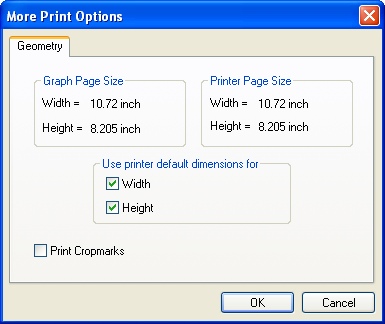
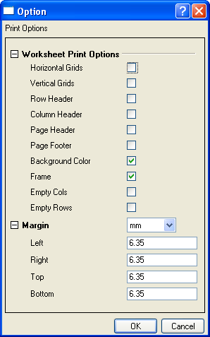

Inhalt |

Dieses Dialogfeld wird über das Dialogfeld Drucken geöffnet, wenn ein Grafik-, Funktionsgrafik. oder Layoutseitenfenster aktiv ist.
Hier wird die aktuelle Diagrammseitengröße angezeigt, die auf der Registerkarte Drucken/Druckbereich des Dialogfelds Details Zeichnung der Diagrammseite festgelegt ist.
Hier werden die Abmessungen der aktuellen Druckerseite angezeigt.
Sie können eine Diagrammseite drucken, die kleiner oder größer als der aktuelle Druckbereich ist, und dabei die festgelegten Abmessungen auf dem Ausdruck der Diagrammseite beibehalten.
Eine Diagrammseite mit Abmessungen, die kleiner als die des Druckbereichs sind, wird auf einer Seite gedruckt. Die linke obere Ecke des Diagramms wird an der linken oberen Ecke der gedruckten Seite positioniert (unter Beibehaltung des Druckrands).
Eine Diagrammseite mit Dimensionen, die größer als der Druckbereich sind, wird auf mehreren Seiten gedruckt.
Diese Gruppe steiert die gedruckte Diagrammgröße. Um sicher zu stellen, dass die Werte in den Textfeldern Breite und/oder Höhe in der Gruppe Diagrammgröße die Größe des gedruckten Diagramms steuern, deaktivieren Sie die Kontrollkästchen Breite und/oder Höhe in der Gruppe Standard-Druckbereich verwenden für. Wenn die Kontrollkästchen Breite und Höhe hingegen aktiviert sind (standardmäßig), wird Origin die Diagrammseite an die gedruckte Seite anpassen, unabhängig von den Einstellungen der Gruppe Diagrammgröße.
Wenn zum Beispiel die Breite einer Diagrammseite auf 20 Zoll und die Höhe auf 8 Zoll eingestellt ist, während der Druckbereich 10 Zoll Breite und 8,5 Zoll Höhe aufweist, und zugleich das Kontrollkästchen Breite deaktiviert, Höhe jedoch aktiviert ist (Gruppe Standard-Druckbereich verwenden für), wird Origin das Diagramm auf zwei Seiten ausdrucken (weil 20 Zoll /10 Zoll = 2).
| Beachten Sie, dass das Dialogfeld Details Zeichnung aktualisiert wird, um Ihre Änderungen wiederzugeben, wenn Sie die Bedienelemente des Dialogfelds Weitere Druckoptionen bearbeiten. Ebenso wird das Dialogfeld Weitere Druckoptionen aktualisiert, wenn Sie die Bedienelemente des Dialogfelds Details Zeichnung bearbeiten. |
Um Schneidemarken anzuzeigen, die den nicht-druckbaren Bereich kenntlich machen, aktivieren Sie das Kontrollkästchen Druckbereich markieren.

Dieses Dialogfeld wird über das Dialogfeld Drucken geöffnet, wenn ein Arbeitsblatt oder Matrixfenster aktiv ist.
Legt die Bereiche des Arbeitsblatts/der Matrix fest, die gedruckt werden. Wenn Sie z.B. die Kontrollkästchen Horizontale Gitternetzlinien oder Vertikale Gitternetzlinien nicht aktivieren, wird dieses Arbeitsblatt ohne Gitternetzlinien ausgedruckt.
Sie können in diesem Zweig die Einheit für den Rand auswählen und dann den Rand links, rechts, oben und unten festlegen.